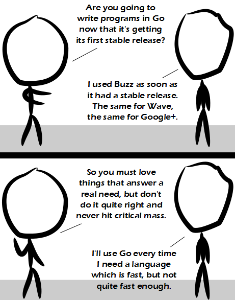

Comic JK 895
When I Feel Like It
⇤
<
?
>
⇥

⇤
<
?
>
⇥
Forum
.
RSS
.
Digg
.
Facebook
.
Reddit
.
Twitter
.
Stumbleupon
Enter your thoughts on number 895 here. Please, no spamming, trolling, or Coding your site in go. Still do use wave! Thank tinternetz for WiaB. >I tried a stable release of Wave, but couldn't get the horses to raise their tails in synchronous order. qSo true, if you want speed just use Common Lisp like a real programmer. >Or brainfuck. >>REAL programmers use Assembly! >>> Real programmers use MACHINE CODE >>>> Real programmers do electronics >>>>>Real programmers use C#, Java, VB, SQL, PHP, Javascript. >>>>>> I guess your anus is a real programmer then. Actually Google mostly uses C++ for infrastructure and Java for front-end. >Java is annoying. > This is not true. Google infrastructure code is mostly Python. >> What Google company are YOU >>> "Google uses Python for many tasks including the backends of web apps such as Google Groups, Gmail, and Google Maps, as well as for some of its search-engine internals" - from en.wikipedia.org/wiki/List_of_Python_software I learned to program in Python, and had to switch to C++ recently. My only question is: are you definitely sure that this is better than anything anybody else has managed to come up with IN THE LAST 30 YEARS? > C++ is still alive because very few recent languages provide low level granularity down to exact addresses and bits. This is needed in order to do any kind of hardware interfacing. >> and because C++ of today isn't the C++ of yester-year. It's a growing language >> C provides the same granularity without the tangled mess that is templates and the rest of the standard Necronomicon of C++. To code C++ truly, your mind has to be able to endure constant exposure to the Outer Gods. >>> I tried to test that, but the Outer Gods kept running away as soon as they sensed me. I don't feel wanted at all. >>>so, for someone who learned C++ in the late 1990's, what would be a good book or website for learning the changes and geting up-to-date with current "best practise" ? ( as opposed to one that spensds 90% explaining basic programming concepts... ) >>>> +1 this question. Anybody please? >>>>> +1 >>>>>> ++1 >>>>>>>Really? Nobody? Somebody should bump this one...